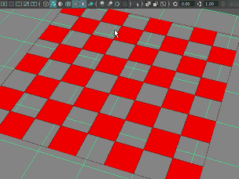

选择(Renderer > Viewport 2.0) >  以打开“硬件渲染器 2.0 设置”(Hardware Renderer 2.0 Settings)窗口，该窗口包含以下选项。
以打开“硬件渲染器 2.0 设置”(Hardware Renderer 2.0 Settings)窗口，该窗口包含以下选项。
默认照明(Default Lighting)
- 灯光强度(Light Intensity)
-
此选项允许您控制影响视口中着色对象外观的默认灯光强度。
性能(Performance)
- 合并世界(Consolidate World)
-
该选项会尝试为使用常用材质的形状组合几何缓存。在许多场景中，可以通过额外增加内存来获得性能的大幅提升。
在合并几何体时，“合并世界”(Consolidate world)会将多个对象的顶点移到一个新的共享对象空间中。因此，如果插件着色器做了有关对象的对象空间坐标的假设，“合并世界”(Consolidate world)将打破这些假设，着色器可能无法正确渲染。
若要使用此功能，必须重新将顶点法线归一化为单位长度。因此，不使用单位长度法线的材质将与“合并世界”(Consolidate world)不兼容。
当对象发生更改时，它还未进行合并。之后如果持续几个帧保持不变，它会重新进行合并。因此，如果您发现在编辑或取消选择后，对象在视口中绘制了很短时间内有所不同，这可能是“合并世界”(Consolidate world)导致的。如果不希望出现此情况，则禁用此选项。
提示： 如果工作区变得不稳定，请尝试禁用此选项。重要： 使用该选项时，某些操作会引发轻微的延迟。 - GPU 实例化(GPU Instancing)
-
启用此选项后，如果一个 Maya 形状（如多边形对象）有多个实例（特别是大量实例），且所有实例都使用相同材质，则它们可以使用硬件实例化进行渲染。这消除了显卡驱动程序状态更改开销以及渲染流程开销，可更快地生成渲染结果。
在某些情况下，您可能想要禁用“GPU 实例化”(GPU Instancing)，例如以下情况：
-
有时，当实例具有负比例并且您启用了其他功能（如背面消隐），照明可能显示不正确。通常，如果具有负比例且实例显示不正确，那么请禁用“GPU 实例化”(GPU Instancing)。
-
如果您拥有大量非常小的实例，启用此选项可能会降低场景的速度。例如，如果您拥有一个包含 1000 个非实例化对象的大型场景，并将其全部选中，然后一次性进行实例复制，那么您将拥有 1000 个实例对。在类似情况下，如果实例批次非常小且具有大量批次，那么“GPU 实例化”(GPU Instancing)的开销可能导致场景速度稍慢。没有实例的对象则不会有实例化开销。
-
使用 MPxGeometryOverride 的插件可能不支持“GPU 实例化”(GPU Instancing)。
-
- 灯光限制(Light Limit)
-
使用此选项可设置渲染中使用的最大灯光数。不包括隐藏的灯光。默认为 8 个灯光，最大为无限制。
- 透明度算法(Transparency Algorithm)
-
请从下列透明度排序算法中选择。
- 简单(Simple)
-
不进行透明度排序。
- 对象排序(Object Sorting)
-
对象将按深度进行排序。会将离摄影机远的对象绘制在离摄影机近的对象前面。
- 加权平均(Weighted Average)
-
这是一个与顺序无关的透明度算法，且不涉及任何对象或多边形排序。会将最终颜色计算为一个像素内所有透明对象的加权平均。该算法的优点是，它与顺序无关，因此即使对于大量透明对象、头发、粒子系统等等，它也会很快。该算法非常适合远处对象，此时您需要使用快速算法渲染透明度，但不需要高质量。它对于单级别透明度是准确的，并且是稳定的，没有因排序产生的跳转瑕疵。
为了使插件着色器使用“深度剥离”(Depth Peeling)或“加权平均”(Weighted Average)透明度算法，必须使用以下过程语义实施支持：kTransparentPeelSemantic、kTransparentPeelAndAvgSemantic 或 kTransparentWeightedAvgSemantic。详细信息请参见 Maya 开发人员帮助。否则，插件着色器会恢复为使用“对象排序”(Object Sorting) 透明度算法。
dx11Shader 和 ShaderFX 支持所有透明度算法。
- 深度剥离(Depth Peeling)
-
深度剥离透明度通过多个通道渲染每个像素的透明度。在每个过程中，剥每个像素的下一个透明层并在上一层的后面进行合成。在处理完所设置的已剥层的数目之后，将在单个过程中使用加权平均算法处理其余的所有层。这有助于平衡透明度质量和性能，因为深度剥提供高质量的透明度，但会大大降低性能。
对于使用很多半透明 PaintFX 笔划的场景，请使用此选项。
注： “深度剥离”(Depth Peeling)不支持“多采样抗锯齿”(Multisample Anti-aliasing)。它仅影响不透明对象，而不影响透明对象。 - Alpha 切割(Alpha Cut)
-
对于完全透明和完全不透明的对象，通过此透明度算法可以准确地排序对象。渲染半透明区域时，达不到最佳效果。“Alpha 切割”(Alpha Cut)提供的性能增益可与“简单”(Simple)模式相媲美，而生成的图像质量则等于或高于“对象排序”(Object Sorting)算法。
若要快速渲染树叶和轻质对象以便预可视化或降低替代对象的 LOD，此算法十分理想。
- 透明度质量(Transparency Quality)
- 对于“深度剥离”(Depth Peeling)透明度算法，可在 Maya 开始使用加权平均算法前，通过此滑块选择要剥离的层数。从 2 个到 10 个过程范围内进行选择。
- 透明阴影(Transparent Shadows)
-

启用后可在场景中看到透明度映射阴影。此选项不适用于 DXShader 和 GLSL 着色器等插件着色器。支持从 MPxSurfaceShadingNodeOverride 继承的自定义着色器，例如，onbShaderOverride。
- Alpha 切割预过程(Alpha Cut Prepass)
-
启用此选项可结合“Alpha 切割”(Alpha Cut)透明度算法与任何其他（Alpha 融合）透明度算法（例如“对象排序”(Object Sorting)和“深度剥离”(Depth Peeling)）的优势。这有助于减少或消除由于这些算法固有的限制而产生的瑕疵。
启用此选项后，Maya 先对部分透明曲面的所有完全不透明像素执行 Alpha 切割渲染通道，然后使用您选择的透明度算法执行 Alpha 融合渲染通道。
如果选择“Alpha 切割”(Alpha Cut)透明度算法，则忽略此选项。
最大纹理分辨率钳制(Maximum Texture Resolution Clamping)
- 钳制纹理分辨率(Clamp Texture Resolution)
-
启用此选项后，任何分辨率高于“最大纹理分辨率”(Max Texture Resolution)的纹理都将缩小，以便您可以仍在纹理模式下操作，同时节约内存。
如果您的场景中包含多个高分辨率纹理，以致您的显卡没有足够的内存来处理，则不会加载这些纹理并以非纹理模式显示该场景。此时将显示一条错误信息，指明已超出纹理 RAM 限制并建议您减小“最大纹理分辨率”(Max Texture Resolution)钳制。
只要显卡没有足够的内存来处理纹理，就会显示该错误消息，如果未启用“钳制纹理分辨率”(Clamp Texture Resolution)，或“最大纹理分辨率”(Max Texture Resolution)设置得太高且无法充分缩小纹理分辨率以满足可用的 GPU 内存，则会出现这种情况。
- 最大纹理分辨率(Max Texture Resolution)
-
确定如何设置纹理分辨率。可以选择以下两个选项之一。
- 自动(Automatic)：Maya 根据可用内存/场景占用的内存量自动设置最佳的纹理分辨率。灰显的滑块显示所选的值。
注： 仅当在显示首选项(Display Preferences)中将“Viewport 2.0”设置为“OpenGL - 核心配置”(OpenGL - Core Profile)或“DirectX 11”模式时，“自动”(Automatic)模式才有效。它不适用于“OpenGL - 旧版”(OpenGL - Legacy)模式。
- 自定义(Custom)：设置一个介于 32 和 16384 之间的值。
- 自动(Automatic)：Maya 根据可用内存/场景占用的内存量自动设置最佳的纹理分辨率。灰显的滑块显示所选的值。
- 重新加载所有纹理(Reload All Textures)
-
在更改“最大纹理分辨率”(Max Texture Resolution)后，单击以将更新的限制应用于已加载到场景中的纹理。否则，更新的限制将仅应用于新加载的纹理。请参见对“超出 GPU 纹理 RAM，纹理加载失败”错误消息进行疑难解答。
- 重新生成所有 UV 平铺预览纹理(Regenerate All UV Tile Preview Textures)
-
与“UV 平铺模式”(UV Tiling Mode)结合使用。（请参见通过单个纹理节点加载多平铺 UV 纹理。）
默认情况下，Maya 不会自动预览“Viewport 2.0”中的 UV 平铺纹理。如果在场景中有多个 UV 平铺集，可以通过单击“重新生成所有 UV 平铺预览纹理”(Regenerate All UV Tile Preview Textures)生成所有 UV 平铺集的预览。此选项将遵循为每个文件节点保存的“预览质量”(Preview Quality)设置。
不支持的纹理类型的烘焙分辨率(Bake Resolution for Unsupported Texture Type)
- 颜色纹理(Color Textures)、凹凸纹理(Bump Textures)
-
支持用作烘焙纹理的 Maya 着色节点将列在 Viewport 2.0 的内部纹理烘焙中。可以使用这些属性为烘焙的纹理设定分辨率。
- 重新烘焙所有纹理(Rebake All Textures)
- 单击以查看当前所加载纹理的更改效果。
屏幕空间环境光遮挡(Screen-space Ambient Occlusion)
- 启用(Enable)
-
选择此选项可启用屏幕空间环境光遮挡。
注： 当“多采样抗锯齿”(Multisample Anti-aliasing)或“屏幕空间环境光遮挡”(Screen-space Ambient Occlusion)处于启用状态时，可能会在半透明对象顶部绘制 UI 项目（如定位器或线框网格）。 - 数量(Amount)
- 指定发生的环境光遮挡的强度。默认值为 1.0，但可以在 0.0 到 3.0 的范围内选择。
- 半径(Radius)
- 指定采样区域的半径（在屏幕空间中）。
- 样例(Samples)
- 指定为改进环境光遮挡效果的外观而发生的遮挡采样数。
启用后期效果（如屏幕空间环境光遮挡、运动模糊和景深）时，线框和组件的绘图不受这些效果影响。曲面的填充显示会受到影响。但是，如果曲面是半透明的，那么曲面的线框和组件不会与填充的绘图融合到一起。例如，如果创建了一个对象，然后将其着色器透明度设定为半透明并选择该对象或其组件，那么将看到启用和禁用“屏幕空间环境光遮挡”(Screen-space Ambient Occlusion)之间的差别。
此外，与其他透明度选项不同，使用“加权平均”(Weighted Average)的“透明度算法”(Transparency Algorithm)时，不会将线框绘图与透明曲面绘图融合到一起。
硬件雾(Hardware Fog)
- 衰减(Falloff)
-
从以下选项中进行选择：
-
“线性”(Linear)：启用选项“开始”(Start)和“结束”(End)，并创建从灯光中心缓慢减弱的雾。
-
“指数”(Exponential)/“指数平方”(Exponential squared)：启用确定雾的厚度的“密度”(Density)选项。此选项将创建遵循指数曲线快速减弱的雾。“指数平方”(Exponential squared)创建更逼真的雾。
-
- 密度(Density)
-
控制雾层中水汽的光学密度。增加该值以加厚雾。
- 开始(Start)
- 确定雾开始处与摄影机的距离。
- 结束(End)
- 确定雾结束处与摄影机的距离。
- 尖端(Tip)
- 可以设置“结束”(End)值的动画，以便在动画期间雾看起来扩散或消散。
- 颜色(Color)
- 设置雾的颜色。
- Alpha
-
设置 Alpha 值以确定雾的不透明度。
若要从雾渲染中排除特定的对象（例如，如果对象之一已烘焙雾），或者调整应用于对象的雾效果数量，请在对象属性编辑器的“对象显示”(Object Display)部分中调整“硬件雾倍增”(Hardware Fog Multiplier)属性。此值设置为 0 时，对象不受雾的影响。此值设置为 1 时，雾将应用于对象。将滑块调整为介于 0 和 1 之间的值，以调整雾效果的数量。
运动模糊(Motion Blur)
- 启用(Enable)
- 选择此选项可启用运动模糊。
注： 运动模糊一次仅可以处理一个工作区。如果多个工作空间使用 Viewport 2.0，则使用 Viewport 2.0 的所有工作空间都将禁用运动模糊。使用 Viewport 2.0 的视图数不影响运动模糊的渲染视图渲染。
- 类型(Type)
- 该选项指示支持的运动模糊类型。Maya 仅支持其变换随时间有所改变的对象（如曲面或摄影机变换）的运动模糊。Maya 不支持随时间变形的曲面的运动模糊。
- 快门打开分数(Shutter Open Fraction)
- 影片摄影机的快门处于打开状态的帧时间的百分比。0 表示快门根本未打开，1 表示快门在 100% 的帧时间内都处于打开状态。
- 采样计数(Sample Count)
- 沿每个点的运动向量的采样数。采样计数越小，质量就越低，而采样计数越大，质量就越高。
抗锯齿(Anti-aliasing)
- 平滑线框(Smooth Wireframe)
- 选择此选项可为场景视图中的所有线（不论是 UI 还是几何体线框）启用抗锯齿。绘制某条线后，Maya 会将其融合在边周围。相比之下，多采样抗锯齿是逐场景采样且影响所有对象。此选项仅在禁用“多采样抗锯齿”(Multisample Anti-aliasing)的情况下起作用。
- 多采样抗锯齿(Multisample Anti-aliasing)
-
选择此选项可启用多采样抗锯齿。
注： 当“多采样抗锯齿”(Multisample Anti-aliasing)或“屏幕空间环境光遮挡”(Screen-space Ambient Occlusion)处于启用状态时，可能会在半透明对象顶部绘制 UI 项目（如定位器或线框网格）。 - 采样计数(Sample Count)
- 增大采样数可获得更好的抗锯齿质量。“采样计数”(Sample Count)越大，性能就越慢，但获得的抗锯齿效果会越好。
注： 采样计数选项与显卡有关。只有有效的选项才会显示在下拉菜单中。
浮点渲染目标(Floating Point Render Target)
在“颜色管理”(Color Management)首选项中也提供了这些选项。
- 启用(Enable)
-
在 Viewport 2.0 中渲染浮点值，而不是整数值。在启用了颜色管理时，若要在视口中正确查看和拾取颜色，应启用此选项。
- 格式(Format)
-
注： 支持的格式与卡相关，且只有有效的选项才会显示在下拉菜单中。
- R32G32B32A32_FLOAT
- 对每个 RGBA 通道使用 32 位浮点值进行渲染。这种渲染精度非常高，视口中几乎不会出现颜色剪裁、条带或其他瑕疵。这是在 Windows 和 Linux 系统上使用的默认格式。
- R32G32B32_FLOAT
- 类似于上述格式，但不渲染 Alpha 通道。
- R16G16B16A16_FLOAT
- 对每个 RGBA 通道使用 16 位浮点值进行渲染。这种渲染比使用 32 位快，尤其是在某些系统上。这是在 macOS 系统上使用的默认格式。
“渲染选项”(Render Options)（仅“渲染设置”(Render Settings)窗口的“Maya 硬件 2.0”(Maya Hardware 2.0)选项卡）
- 透底(Hold-Out)
-
启用此选项并选择“每对象”(Per Object)模式，以便启用“延续”(Hold-Out)选项（在其形状节点的“渲染统计信息”(Render Stats)部分中）的所有对象在批渲染中透明渲染，并直接显示到背景环境；例如，图像平面或基于图像的照明。这是默认选项。
启用此选项并选择“全部”(All)模式，以便所有对象都在批渲染中透明渲染，并直接显示到背景环境；例如，图像平面或基于图像的照明。
- X 射线模式(X-Ray Mode)
- 选择此选项可启用 X 射线模式。场景视图显示和批渲染都支持 X 射线模式。
- X 射线关节显示(X-Ray Joint Display)
- 选择此选项可启用 X 射线关节模式。场景视图显示和批渲染都支持 X 射线关节模式。
警告： 启用了“运动模糊”(Motion Blur)、“景深”(Depth of Field)或“屏幕空间环境光遮挡”(Screen-space Ambient Occlusion)中的任意一个时，X 射线关节模式不起作用。
- 照明模式(Lighting Mode)
-
在可用照明模式中选择。从“全部”(All)、“默认”(Default)、“活动”(Active)、“无”(None)和“完整环境光”(Full Ambient)中进行选择。如果场景中没有灯光，但选择了“全部”(All)选项，那么使用的照明将取决于“启用默认灯光”(Enable Default Light)选项（在“渲染设置”(Render Settings)的“公用”(Common)选项卡下的“渲染选项”(Render Options)部分）的设置。有关各种灯光模式的详细信息，请参见面板菜单：照明。
注： “活动”(Active)模式相当于“使用选定灯光”(Use Selected Lights)。“完整环境光”(Full Ambient)模式相当于“使用平面光源”(Use Flat Lighting)。 - 单面照明(Single-sided Lighting)
- 选择此选项可启用单面照明，以便对象的内面不会被照明。禁用此选项时，则使用双面照明。详细信息请参见双面照明。
- 渲染模式(Render Mode)
- 从不同的渲染模式中选择。可以选择在线框模式下渲染、或对对象进行着色和/或纹理渲染，或对线框进行着色和/或纹理渲染。
- 硬件雾(Hardware Fog)
-
选择此选项以在最终渲染中包括雾。详细信息请参见上面的硬件雾部分。
- 景深(Depth of Field)
-
选择此选项以在最终渲染中包括景深。必须首先在摄影机属性编辑器中启用“景深”(Depth of Field)。请参见在 Viewport 2.0 中查看景深效果。
- 渲染覆盖(Render Override)
- 可以通过 API 使用自己的自定义渲染器覆盖场景视图渲染器。有关使您能够注册自己的渲染覆盖的类，请参见 MViewport2Renderer.h。渲染覆盖将显示在该下拉列表中。
- 对象类型过滤器(Object Type Filter)
-
从对象列表中选择以从“渲染视图”(Render View)渲染或批渲染中过滤出它们。
使用“组件”(Components)、“装饰”(Ornaments)和“其他 UI”(Misc. UI)控件过滤出下列元素：
- 面、顶点、边、UV、法线、切线、中心
- CV、编辑点和壳线
- 枢轴
- 组件 ID
组件，例如：
- 平视显示仪
- 栅格
- 摄影机名称
- 轴
装饰，例如：
- 尺寸/度量
- 注释
- 句柄
- 操纵器
- 运动路径
其他 UI，例如：
可以使用 UI 选项过滤线框。可以使用“运动轨迹”(Motion Trails)选项过滤运动路径（NURBS 曲线和帧编号）。
提示：在此窗口中关闭的任何元素均不会在“渲染视图”(Render View)或批渲染中渲染。另一方面，“显示”(Show)面板菜单下的设置会过滤出场景视图中的对象。
在 Maya 2015 和更低版本中，默认情况下禁用“对象类型过滤器”(Object Type Filter)的“UI”设置。由于线框和边界框被视作 UI，因此，如果您在“批渲染选项”(Batch Render Options)下选择以下“渲染模式”(Render Modes)：“线”(Wire)、“线框着色”(Wire on Shaded)、“线框着色且带纹理”(Wire on Shaded And Textured)和“边界框”(Bounding Box)，必须启用 UI 切换以及要渲染对象的 UI 列表中的相关子项。
自 Maya 2016 起，选择这四种“渲染模式”(Render Mode)中的任一种时将自动渲染线框和边界框，并且您不需要显式启用 UI 设置。
默认情况下，“图像平面”(Image Planes)过滤器处于启用状态，而“UI”过滤器处于禁用状态。因此，不渲染摄影机 UI，而渲染图像平面。